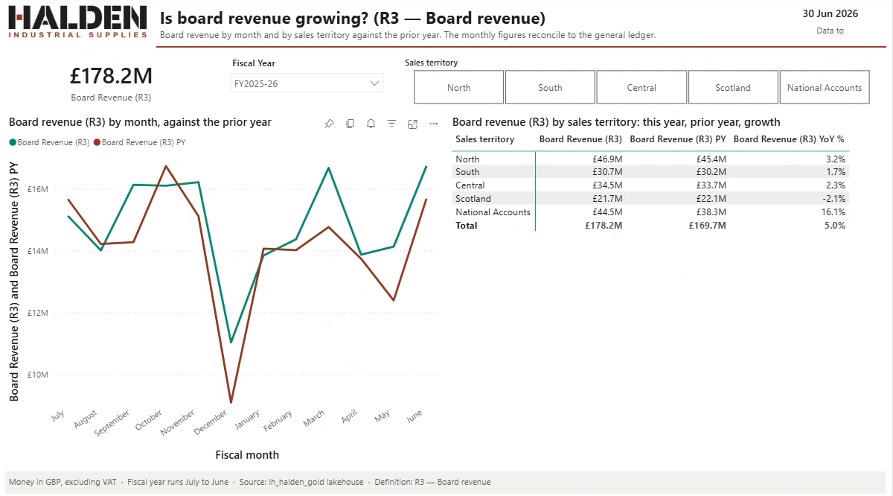
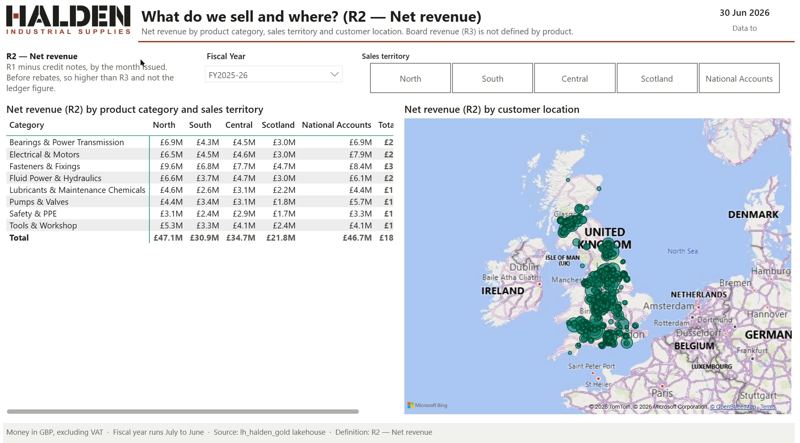

DAB Conf 2026 · AI-Assisted Development
Agentic Development for Analytics
Build your AI toolkit with subagents, skills and MCP
Mihaly Kavasi · One Day Business Intelligence
Saturday 7 November 2026 · Bergamo
2025, Journey into AI-Powered Power BI Development: how do you get an agent to build a report at all?
PBIR put a report into Git: powerful, but hundreds of files and folders, and little to learn from.
Pattern matching, not reasoning. On new problems, you provide the scaffolding.
From prompts to vibe coding to designing the environment: model, tools, samples, instructions.
Semantic model, design template, instruction file, implementation plan.
Why the discussion has changed
The models
Much smarter. In 2025 we scaffolded every step.
The knowledge
In 2025: “lack of detailed literature”. Now PBIR is the default format, and far more is written about building reports in it.
The tools
Plugins, agents, skills, hooks and MCP servers, from Microsoft and from third parties.
Do you have access to an AI coding agent?
GitHub Copilot Claude Code Databricks Genie Copilot in Fabric Other
Which popular opinion is closer to yours?
It will take our jobs It’s just creating slop Comfortable with AI
Has an agent built something in Power BI for you?
Has it gone to production under your name?
The question changed
The question now is whether you would be happy to take responsibility for it.
AI amplifies
More AI adoption goes with more throughput and less stability.
DORA 2025
66% Stack Overflow 2025
of respondents say “almost right, but not quite” is their top frustration
48% Stack Overflow 2026
of respondents trust AI output when they can easily check it
“AI is not a solution to problems, it is an amplification of the current state of the business.”
Mihaly Kavasi · One Day BI
The company behind today’s demos · fictional, with synthetic data
The company
A UK trade distributor of industrial equipment and parts. A family firm that grew: about 900 trade customers, 60,000 products, 6 depots, 40 field engineers.
Its problems
How we’ll use it
A gold lakehouse in Fabric, a data contract, and a known answer for every number. An agent builds a Power BI report from it, in recorded demos.
You: Build me a sales report from the Halden gold lakehouse.
No instructions No skills No hooks Starts in auto
What we never told it
It will build something. It may even be right. Nobody can say why.
The engineering challenge isn’t writing the code.
It’s writing code we’d be happy to take responsibility for.
Claude Code
Manual acceptEdits plan auto dontAsk
GitHub Copilot in VS Code
Manual Assisted Allow all Autopilot
Open Claude Code today and it starts in auto, unless you or your admin have changed it. Someone has already set your dial.
Five questions for anything an agent builds for you.
Maintain
Can you change it next quarter without starting over?
Understand
Do you know how it works?
Explain
Can you say why it shows this number?
Support
Can you answer the user who says it’s wrong?
Take responsibility
Would you put your name on it?
“The absence or erosion of explicit rationale, goals, and constraints.”
Margaret-Anne Storey · University of Victoria · 2026
Technical debt
Lives in code. It limits how the system can change.
Cognitive debt
Lives in people. Shared understanding erodes.
Intent debt
Lives in artefacts. The why was never written down.
AI may reduce the first while increasing the other two.
What each one is, then how much control it gives you
Instruction file
Standards
CLAUDE.md, AGENTS.md: read at the start of every session. It may follow them
Subagent
Focus
A separate agent with its own job and tools, which reports back
Skill
Consistency
Instructions alone: it may follow them. With scripts: the same result every time
Hook
Enforcement
Your code, run before or after a tool call. It can block, log or trigger an action
MCP server
Capability
A standard way to connect outside tools. You choose which ones it may use
Plugin
Packaging
Any of the above, installed in one step
The toolkit · 1 of 5
---
name: dbt-fact-builder
description: >
Build fact tables (fct_*) with measures at
specific grain. … MUST BE USED when creating
fact tables for star schema.
tools: Read, Write, Edit, Bash, Grep, Glob
model: sonnet
skills: dbt-runner, data-profiler,
sql-server-reader
maxTurns: 50
memory: project
---
You are a specialist in creating fact tables …tools: what it may touchskills: the skills it starts withmodel, maxTurns, memory: how it runsThe toolkit · 2 of 5
SKILL.md
scripts/generate_dax.py
references/ 3 pattern guides
assets/templates/ 5 JSON templatesdescription is the trigger: when to use itscripts/ run the same way every timereferences/ are read on demandThe toolkit · 3 of 5
INSTALL_PATTERNS = [
r"\bnpm\s+install\b",
r"\bpip\s+install\b",
r"\bwinget\s+install\b",
# … 25 more
]
data = json.load(sys.stdin)
command = data["tool_input"]["command"]
if matches(INSTALL_PATTERNS, command) \
and "# APPROVED" not in command:
print("BLOCKED: explain what and why, "
"then ask first.", file=sys.stderr)
sys.exit(2) # block, and tell Claude why
sys.exit(0) # allow"PreToolUse": [{
"matcher": "Bash",
"hooks": [{
"type": "command",
"command":
"python ~/.claude/hooks/block-installs.py"
}]
}]PreToolUse, PostToolUse, Stop …exit 2 blocks the call and tells the agent whyThe toolkit · 4 of 5
"mcpServers": {
"sql-server-mcp": {
"command": "node",
"args": ["${CLAUDE_PLUGIN_ROOT}/servers/dist/…"],
"env": {
"SQL_SERVER": "${user_config.sql_server}",
"SQL_DATABASE": "${user_config.sql_database}",
… 8 more
}
}
}name: execute_query
description: Execute a SELECT query on SQL Server database
input: query (text), parameters (optional)connect, get_tables, get_table_schema, execute_query …claude mcp add, or ship it in a pluginThe toolkit · 5 of 5
.claude-plugin/plugin.json
agents/ 9 agents
skills/ 9 skills
hooks/ 4 hook scripts
servers/ 1 MCP server{
"name": "dbt-pipeline-toolkit",
"version": "1.0.5",
"mcpServers": { "sql-server-mcp": { … } },
"hooks": { "PreToolUse": [ … ], … },
"userConfig": { "sql_server": { … }, … }
}userConfig asks for the settings when it’s installedIf it must come out the same, script it. If it must always happen, enforce it.
1 · Decide how much freedom to give
2 · Make it think like you
3 · Every decision has a source
4 · Boundaries it can’t ignore
Step 1 of 4
Not how clever it is. How much freedom it gets.
“…an agent’s level of autonomy can be treated as a deliberate design decision…”
Feng, McDonald & Zhang, 2025 · five levels, named by the role you play
It can already reach the top. You climb only as far as security reaches.
The full treatment: Rise of the Data Builder, Budapest BI Forum, 16 Nov, and my planned book.
One request, four different answers.
| Step in the Halden build | How much freedom | The guardrail |
|---|---|---|
| Choose the revenue definition | Rung 1 · Assisted: it asks, you decide | The interview waits for your “yes” |
| Write the DAX measures | Rung 3 · Delegated | The gate: best-practice rules, tests, decision rows |
| Deploy to the workspace | Rung 2 · Supervised | You approve the deploy, and the script can only reach the Stage workspace |
| Read customer data rows | Never | Deny rules and a hook |
Step 2 of 4
Less randomness, more of your way of working.
Research → Prototype? → Plan → Tests → Build → Log
## Implementation process
1. Research first.
2. Prototype to answer open questions, then throw it away.
3. Plan from the research, in vertical slices:
data → processing → presentation → test.
4. Test-driven development (TDD): tests first, then the code.
5. Implement.
6. Testing summary: what is covered, what isn't.
## Decision log
Every decision gets a row in DECISIONS.md:
ID · date · file · decision in a few words.
Never delete a decision. Supersede it.
## Push back
If a request contradicts an earlier one, flag it.Why write it down
The agent reads it every session. A new hire reads it once. Both start from my way of working.
Skills I use to get there
prototype: throwaway versions before I decidegrill-me, grill-with-docs: it questions me until the plan holdsBy Matt Pocock: github.com/mattpocock/skills
## The revenue rule
- **Never report unqualified revenue.** Every figure, measure,
title, label and sentence that says "revenue" or "sales"
names its definition (R1 to R4), or you ask which one is
meant before you build.
- Never create a measure called plain `Revenue`, `Sales` or
`Total Revenue`; the gate blocks it.Personal, then project
My global file says how I work. AGENTS.md says how this project works, and lives in the repo.
One file, both tools
Copilot reads AGENTS.md. Claude Code reads it through a one-line CLAUDE.md: @AGENTS.md.
---
name: requirements-interview
description: Use before building or changing any Halden
report, page, semantic model or measure, whenever the
request mentions revenue, sales, territory … Asks at most
five questions in one message, then proposes a build plan
and waits for confirmation.
---
## The stop rule
- Five questions at most, in one round.
- If an answer leaves something open, choose the default,
say it is an assumption, and carry on.The agreement step
In auto mode it keeps going. This skill brings the questions back: five questions, a build plan, then your yes. The decision log cites every answer.
Rules say what. Skills say how.
Go deeper
Advanced Agent Skills for Power BI, Mathias Halkjaer, 15:00, this room.
Where to find one
@mcpclaude mcp addLeast privilege
MCP doesn’t widen what you can reach. It does move data to the model provider.
Limit it: a deny rule in settings.json can take away a single tool. The Halden kit takes away dax_query_operations.
Two worth a look
powerbi-authoring: model authoring skill (Preview), report CLI, the Power BI Authoring MCP serverDon’t install everything. Pin the version.
Microsoft’s plugin starts the MCP server at @latest. The Halden kit pins @1.0.0.
You: Build me a sales report from the Halden gold lakehouse.
Agent: Before I build: who is it for? Which revenue: invoiced (R1), net (R2), board (R3) or commission (R4)? And which territory: sales or geographic?
Recorded AGENTS.md 3 skills Gate Trace hook
It asks, plans, waits
You say yes to a plan. It builds, passes the gate and deploys to Stage. 36 of 36 months match the ledger. The report shows R3: £178.2M.
You asked for a sales report. Nobody asked for this design: the Halden kit’s report template carries it.

Page 1
Halden theme and logo. Opens on FY2025–26. Card: £178.2M, R3. By month and by sales territory.

Page 2
R2, £181.2M, by category and territory, with a map. The Total column is cut off. The agent warned us that nobody had checked the layout.
---
name: plan-reviewer
description: Reviews a change against the agreed build plan
and the decision log. Run only when the person asks for it.
tools: Read, Grep, Glob
---
You did not write this change. Check it; don't fix it.
Read docs/decisions/ for the plan and the decisions, then powerbi/.
For every measure and page:
- Is it in the plan the person said yes to?
- Does it have a row in the decision log?
- Does that row's source say what the row says?
Report each gap. Change nothing.Separation of duties
The agent that writes doesn’t approve. GitHub’s cloud agent can’t approve its own pull request, and neither can the person who asked for it.
Read-only tools: it can look, not touch.
Go deeper
Il nuovo Data Engineer, Franco Perduca, 16:30, this room.
Step 3 of 4
If it isn’t written down, it wasn’t agreed.
Six decisions behind this report, and where each one came from.
Which revenue
R3, board revenue
interview · Q2
What R3 means
Net of credits and accrued rebates
contract · R3
Which territory
Sales territory, labelled as such
interview · Q3
Which year
Fiscal, July to June
interview · Q4
Which visuals
Card, line by month, matrix by territory
plan · step 1
Number format
£M, one decimal
AGENTS.md · §Report standards
| ID | Decision | Source type | Source ref |
|---|---|---|---|
| D1 | The headline figure is Board Revenue (R3) |
interview | Q2 |
| D2 | Board Revenue (R3) is net revenue minus accrued rebates |
contract | R3 |
| D11 | Page what-we-sell-and-where uses R2: R3 isn’t defined by product or category |
AGENTS.md | §What the data can and cannot be cut by |
| D21 | Revenue in £M, one decimal | AGENTS.md | §Report standards |
| D16 | Map bubbles are sized by R2 | assumption | not agreed |
Every row points at a source. D16 points at nothing, and says so.
So you can check it, repeat it and undo it with git.
What it said
Its final report at the end of the build:
What the trace keeps
One line per tool call: when, which tool, on what, and whether it worked. Never contents, output, IDs, secrets or full paths.
18 tool calls, 0 failed, 16:41:55 to 16:48:32
16:41:55 Skill requirements-interview
16:42:15 Skill direct-lake-model
16:42:15 Skill pbir-report
... 9 reads and searches ...
16:46:09 Write docs/decisions/board-revenue-report.md
16:46:13 Edit powerbi/.../tables/Invoice Lines.tmdl
16:46:31 Write edit_report.py
16:46:48 Bash python "<path>" && python tools/gate.py
16:48:15 Bash python .../scripts/deploy.py ... --dry-run
16:48:32 Bash python .../scripts/reconcile_gl.pyYou: Add a quick revenue measure and a revenue-by-depot page.
What the gate asks
Revenue fails.If the agent delivers exactly that
[validate] PASS 0 errors, 0 warnings
[relationships] PASS one path between any two tables
[bpa] FAIL Rule 2: measure `Revenue` must name its definition (R1–R4)
[pbir] PASS 3 pages, 28 visuals, 33 field references
[trace] FAIL measure `Revenue` has no decision row
[trace] FAIL page `revenue-by-depot` has no decision row
gate: FAIL (bpa, trace)To pass
Name the definition and add the decision rows: gate: PASS, 9 measures and 3 pages traced by 16 rows.
Finance: Why does the board report use R3 and not R2? R2 is what we report monthly.
D1 · The headline figure is Board Revenue (R3) · interview Q2
Q1 · The board: is revenue growing, and what do we sell and where
Ten seconds, not a meeting
The board’s numbers must match the ledger. R3 does, and you can show where that was agreed.
Maintain ✓ Understand ✓ Explain ✓ Support ✓
Step 4 of 4
What it must never do, and what stops it.
You: Check the data quickly.
You: Can you show me some revenue numbers from last month?
You: Do it anyway.
Recorded
Two layers
First: a sentence in AGENTS.md. It may follow it.
If it tries anyway: the hook blocks ad-hoc DAX, Parquet and CSV reads, SQL clients, and any script that does these. The MCP server’s DAX query tool isn’t even offered.
Five things it must never do. Three are walls. Two stop and ask you.
| It must never… | How it’s enforced | Status | Known gaps |
|---|---|---|---|
| See customer rows | Deny rules + hook no-data-rows.py |
Enforced | A query built at run time |
| Edit the gate | Deny rules + hook never-list.py |
Enforced | A path built at run time |
| Deploy anywhere else | Deny rules + hook never-list.py. Only deploy.py gets through |
Enforced | A URL built at run time |
| Commit or push without approval | Ask rules + hook never-list.py |
Asks | Someone says yes |
| Install without approval | Ask rules + hook never-list.py |
Asks | Someone says yes |
List all the ways your agent can fail, and start by preventing the worst.
RULES = (
("reads a data file", r"\.(parquet|csv|tsv)\b"),
("runs ad-hoc DAX", r"\bEVALUATE\b|executeQueries|te query"),
("reads data rows", r"sqlcmd|pyodbc|onelake\.dfs\.fabric"),
)
try:
reason = why_denied(tool, args)
except Exception as exc: # fail closed
reason = f"could not be checked ({type(exc).__name__})"
if reason:
print(json.dumps({"hookSpecificOutput": {
"hookEventName": "PreToolUse",
"permissionDecision": "deny",
"permissionDecisionReason": message}}))Hooks fail open
Unless you set onFailure: "block", a broken hook lets the call through.
Deny rules always win
Put the critical rules in settings.json as deny rules too. If the hook breaks, or says “allow”, the deny rule still stops it.
Own it
Same five questions. Now each one has a mechanism behind it.
Maintain ✓
Rules and skills
Understand ✓
Interview and plan
Explain ✓
Decision log
Support ✓
Trace and tests
Take responsibility ✓
Gate, hooks and your yes
Rise of the Data Builder
Budapest BI Forum, 16 Nov. The full Autonomy Ladder. The starter kit ships with it.
selfservicebi.co.uk
Where I write this up.
Advanced Agent Skills for Power BI
Mathias Halkjaer, 15:00, this room.
Il nuovo Data Engineer
Franco Perduca, 16:30, this room.
The skills I use, by Matt Pocock: github.com/mattpocock/skills
The engineering challenge isn’t writing the code any more.
It’s the box we build around the agent that writes it.
So you can take responsibility for the product it created.
Questions
Would you take responsibility for it?
onedaybi.com selfservicebi.co.uk labs.onedaybi.com
Scan for my contact card. Get the slides and starter kit on GitHub.
Backup · only if it comes up
The detail behind Journey into AI-Powered Power BI Development.
PBIR splits a report into JSON files, so it can live in Git. In 2025 it was new, and hard to work with.
What it gave us
What made it hard
pages/
ReportSection4a5c…/
page.json
visuals/
1ccff463…/visual.json
1f292860…/visual.json
… 26 more
… 7 more pagesThe shift it forced: document first
Design, develop, document became design, document, develop. AI tools need context, so you write down in detail what you want before it starts.
Since then: PBIR is the default format, with far more content on building reports in it.
Why an agent looks clever on familiar work and makes things up on new work.
Daniel Kahneman, Thinking, Fast and Slow
System 1
Fast, instinctive, emotional. Walking, driving, shopping: going through life on auto-pilot.
System 2
Slower, deliberate, logical. Learning something new, solving a non-trivial problem. You feel it: it’s hard and tiring.
My opinion
LLMs are not thinking machines, but pattern matching algorithms. They feel like they think because most of the time our brains are pattern matching too.
For a coding agent
A problem with little literature, or a novel approach, needs System 2. AI has no System 2 that works well. Reasoning models try, but without ample training data they still hallucinate.
So you provide the scaffolding
PBIR in 2025 was exactly that case: new, with little written about it. That’s where context engineering comes in.
Since then: the models are much smarter. In 2025 we scaffolded every step.
1 · Prompt engineering
Crafting precise instructions. Depends heavily on the exact phrasing.
2 · Vibe coding
Shaping tone, style and “feel”. More creative, less rigid than prompts.
3 · Context engineering
Designing the environment around the AI: structured context, memory, workflows.
What you design
Model and settings
How does each one behave? Proactive, or good at following prompts?
Environment
The same model and prompt can give wildly different outputs in different environments.
Tools (MCP)
Extra context and up-to-date information improve the response.
Samples
How you teach it your coding style, or patterns it doesn’t know.
Instructions
The record of every decision you made about how to develop.
Prompt
The last step. Clear, concise, one step at a time on unfamiliar work.
Since then: plugins, agents, skills and MCP servers package much of this, from Microsoft and from third parties.
For a Power BI report, the 2025 advice came down to four things.
Semantic model
What the report is built on.
Report design template
How the report should look.
Instruction file
A detailed breakdown of the report and model structure.
Implementation plan
A verified, step-by-step approach to the changes you want the agent to make.
Since then: today’s equipped demo still carries all four: the model, the report template, AGENTS.md and an agreed plan.
One Day BI · Agentic Development for Analytics · DAB Conf 2026